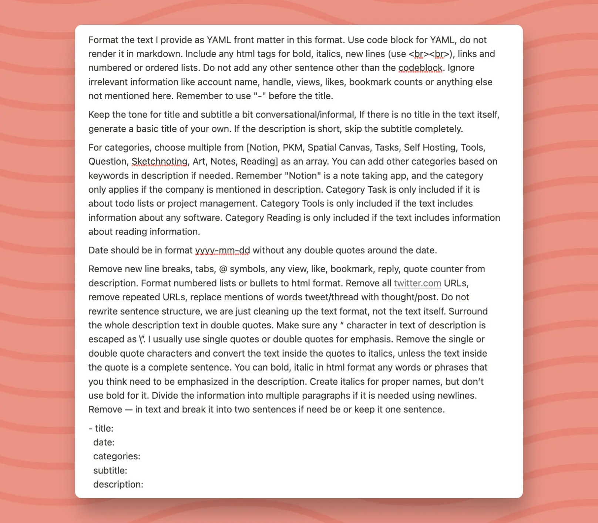

Thought Stream
Stream is a fun little side place to gather my random musings, quick reviews, and quotes that catch my eye into a curated collection. It’s nice to have everything in one place instead of scattered across my feed.
Thoughts on UX and Tool Choices
Realizing I use Procreate because it has double/triple tap for redo/undo & rotation of canvas; use Notion because it is a webapp, multi platform, block based with interesting blocks.
I've lost all rights to suggesting that people shouldn't have UX as a main deal breaker ü§¶üèæ‚Äç‚ôÄÔ∏è
I've lost all rights to suggesting that people shouldn't have UX as a main deal breaker ü§¶üèæ‚Äç‚ôÄÔ∏è
Tools
Notion
Art
My Experiment with Google Workspace vs Notion
The pros and cons of using Google Workspace for note-taking and tasks
I tried using Google Workspace as an alternative to Notion and, although I appreciate many of its features, I've decided it's not the right fit for me right now. I have several reasons for liking Google Workspace: it functions offline, almost everyone has a Google account, and its integration with Bard is seamless. Features such as toggles, previews, markdown-based writing, and rich text are also invaluable. The tasks functionality, although not free, is impressive as they can be linked with Google tasks, mentioned in chats, and synced from documents. I find Sheets+API information straightforward, and the ease of handling data through inline dropdowns & places is superior to Notion. Its offline capability, compatibility with Google Calendar, Meet, Keep, Google Apps Script, Gmail integrations, outline on the side pane, and summary are features I truly adore.
However, there are some areas where Google Workspace falls short for me. I prefer the toggles in Notion, as Google Docs' toggles are restricted to headings. The use of embeds, callouts, and block-based editors is something I am accustomed to and enjoy in Notion. I miss features like synced blocks and block mentions, and I'm not a fan of viewing Google Drive as a cluttered space with numerous files. Notion's user experience, especially when opening a page with the same sidebar, feels more cohesive. Another concern is the storage aspect; uploading to Google consumes my storage while Notion offers it for free. I'm more familiar with the Notion API, making it easier for me than Google Docs API. Public content presentation in Notion also feels superior to GDocs.
Perhaps in the future, if I become more comfortable with the editor and the absence of certain block features, I might reconsider Google Workspace. It encompasses many features I desire from Notion, particularly task collection and an advanced AI search via Bard for GDrive. This post did enlighten me: if I could ever tolerate the sight of 10k randomly scattered files, Google Workspace would be my go-to. Surprisingly, I even prefer it over Obsidian, which further narrows down my options.
However, there are some areas where Google Workspace falls short for me. I prefer the toggles in Notion, as Google Docs' toggles are restricted to headings. The use of embeds, callouts, and block-based editors is something I am accustomed to and enjoy in Notion. I miss features like synced blocks and block mentions, and I'm not a fan of viewing Google Drive as a cluttered space with numerous files. Notion's user experience, especially when opening a page with the same sidebar, feels more cohesive. Another concern is the storage aspect; uploading to Google consumes my storage while Notion offers it for free. I'm more familiar with the Notion API, making it easier for me than Google Docs API. Public content presentation in Notion also feels superior to GDocs.
Perhaps in the future, if I become more comfortable with the editor and the absence of certain block features, I might reconsider Google Workspace. It encompasses many features I desire from Notion, particularly task collection and an advanced AI search via Bard for GDrive. This post did enlighten me: if I could ever tolerate the sight of 10k randomly scattered files, Google Workspace would be my go-to. Surprisingly, I even prefer it over Obsidian, which further narrows down my options.
Notion
Tasks
Tools
Google Workspace
The Importance of Accessibility as a Default
Embracing Accessibility from the Start
I think it is the concept of defaults. If you have time to add cute animations, you have time to make it accessible.
As someone who never thought about accessibility when I was in India, it took me time to come around to the idea that accessibility needs to be the default.
For example, yes, looking for color blind palettes and textures adds time to your graphing process, but that time should have been factored in.
Considering non-color blind friendly graphs as a completed task was the problem for me. üòÖ
As someone who never thought about accessibility when I was in India, it took me time to come around to the idea that accessibility needs to be the default.
For example, yes, looking for color blind palettes and textures adds time to your graphing process, but that time should have been factored in.
Considering non-color blind friendly graphs as a completed task was the problem for me. üòÖ
Tools
Opinion
Give Your Chrome the Vertical Tabs It Deserves!
If you use Chrome and envy the vertical tabs that Arc has, I just modified a few lines in Polychrome to support side panel: here.
Supports tab groups, multiple windows, search, drag and drop, pinned tabs, and duplicate tabs removal!
Supports tab groups, multiple windows, search, drag and drop, pinned tabs, and duplicate tabs removal!
Tools
The Struggle with Information Consumption
A Reflection on Diverse Information Interaction
It has been so darn irritating realizing that I click on, consume, understand, think about, create, and recall information in different ways.
This is possibly the most irritating realization I have had about myself. It contextualizes so much, but I wish I was not this way.
This is possibly the most irritating realization I have had about myself. It contextualizes so much, but I wish I was not this way.
Notes
Reading
A Handy Tool for Automating Email Labelling!
AI Email Labeller is a nifty Google Apps Script that allows you to automatically label your emails based on your prompts. It’s hosted on Google Apps Script, enabling users to leverage the GMail API directly, even those in a managed workspace like .edu domains. The only cost involved is the OpenAI API.
Check out the project on GitHub and watch this video to see it in action.
The one major thing GPT has enabled me to do is be able to create UIs for scripts that I would have just relied on code/spreadsheet for. Makes it much more likely that I will actually end up using something too!
Check out the project on GitHub and watch this video to see it in action.
The one major thing GPT has enabled me to do is be able to create UIs for scripts that I would have just relied on code/spreadsheet for. Makes it much more likely that I will actually end up using something too!
Tools
Self Hosting
The Irony of Loving Sketchnotes but Not Learning from Them
Sketchnotes catch my eye but don't hold my attention
I've always been a fan of the concept of sketchnoting, but I have realized I don't consume information that way. And it really makes it much more unlikely for me to sketchnote, which honestly is sad. What I actually like consuming information from are infographics or supporting images, not icons.
But, sketchnotes serve a different purpose for me. I don't know what part of sketchnotes makes me want to click on the link so much, but I do not actually want to learn or read the illustration? (Or maybe it is just that I have run out of ADHD meds at the moment, and have 0 visual focus, but that's unlikely).
They are so irresistible for my mind. It's very much as if my mind goes Oooh, a pretty well thought-out illustration, that must have required so much effort. Let's click the link and read the article. They are the definition of possibly me judging a book by its cover.
But, sketchnotes serve a different purpose for me. I don't know what part of sketchnotes makes me want to click on the link so much, but I do not actually want to learn or read the illustration? (Or maybe it is just that I have run out of ADHD meds at the moment, and have 0 visual focus, but that's unlikely).
They are so irresistible for my mind. It's very much as if my mind goes Oooh, a pretty well thought-out illustration, that must have required so much effort. Let's click the link and read the article. They are the definition of possibly me judging a book by its cover.
Sketchnoting
Art
Reading
Trying the Horse Browser
A Perfectly Functional Tool I'm Not Using
Ever so often, I come across an app, I think I need, and it works perfectly, but I end up not needing it, at least not in the way I thought I'd need it. The latest app in the list is browser.horse, thanks to PascalPixel who very kindly allowed me to test the app a few months back. Browser horse claims to do one thing: create trail-like navigation structure to your tabs. And it does it perfectly.
On the worst of days, I have had 200+ tabs open in Horse; on the best, at least a 100. And it has been pretty stable for all of it. It is especially useful for situations where I open multiple references from a paper; if I'm deep diving into that paper. It feels like creating a flowchart, but in your browser.
So, why don't I use it? Tree-based navigation is not a new paradigm. SigmaOS and Stack_HQ are two other main browser apps that do something similar. And my lack of usage is not due to the shortcomings of browser horse; but rather due to my browsing pattern.
Unfortunately, I am often deep diving into multiple parent papers/objects with overlapping concepts; and that is where the pattern breaks. I am looking for auto-organize and auto-deduplicate based on set of NLP kind filters. If paper on A; ≤3 months, group it.
I have multiple parent saplings and have overlapping leaves; with weird usage constraints - and if you don't have those; you'll enjoy Horse. It of course has some drawbacks - I wish it had full support for extensions + customizable navigation.
I, personally, won't pay for a browser, but if that is something that you're open to; and you often find yourself dead in 200 tabs, you should see if Horse is up your alley.
On the worst of days, I have had 200+ tabs open in Horse; on the best, at least a 100. And it has been pretty stable for all of it. It is especially useful for situations where I open multiple references from a paper; if I'm deep diving into that paper. It feels like creating a flowchart, but in your browser.
So, why don't I use it? Tree-based navigation is not a new paradigm. SigmaOS and Stack_HQ are two other main browser apps that do something similar. And my lack of usage is not due to the shortcomings of browser horse; but rather due to my browsing pattern.
- Anything I browse does not get added to Google browsing history (and I want that - Yes, I know the privacy concerns; and I choose convenience and recall)
- Lack of extensions, so I cannot quick add to readwise, copy all links, quick add to todoist etc.
- But most importantly, I realized that I'm not really looking for an origin ‚Üí tree structure when I want tab organization (aka trails).
Unfortunately, I am often deep diving into multiple parent papers/objects with overlapping concepts; and that is where the pattern breaks. I am looking for auto-organize and auto-deduplicate based on set of NLP kind filters. If paper on A; ≤3 months, group it.
I have multiple parent saplings and have overlapping leaves; with weird usage constraints - and if you don't have those; you'll enjoy Horse. It of course has some drawbacks - I wish it had full support for extensions + customizable navigation.
I, personally, won't pay for a browser, but if that is something that you're open to; and you often find yourself dead in 200 tabs, you should see if Horse is up your alley.
Tools
Reading
My Approach to Reading and Note-Taking
I Don't Take Notes for 90% of My Reading
I have three reading models:
- Skimming (50%)
- Reading for pleasure (40%)
- Understanding and dissecting a research paper (10%)
Reading
Notes
Micro-Blogging: Twitter to Quarto
Posting to Twitter's AND a self-hosted YAML and HTML solution.

I decided in May to start micro-blogging on my own website here. But as I've mentioned before, I'm not a fan of writing in markdown. Quarto offers a combination of md, html, and yaml, which works for me. So, now I write my initial thoughts on Twitter and then clean them up into YAML format.
It is heavily inspired by stream.thesephist.com. It serves as a timeline of my thoughts. If you're curious about how I convert Twitter posts to YAML, you can find the output here. The exact prompt to achieve this can be found here.
It is heavily inspired by stream.thesephist.com. It serves as a timeline of my thoughts. If you're curious about how I convert Twitter posts to YAML, you can find the output here. The exact prompt to achieve this can be found here.
Self Hosting
Tools
Notes
The Elusive Search for the Perfect AI Editing App
Why most AI writing tools miss the mark for advanced editing needs.
Anyone has suggestions for in-background AI-based document editing apps? I don't need the app to tell me what to write next. What I'm looking for is an app that suggests changes like, 'This needs rephrasing to connect well to another section,' or 'Merge these two repeated sections.' I think my gripe with AI writing tools is that they're very generative rather than being aids for editing.
It's like someone misunderstood the term generative AI and decided that content generation is its best use. But writing a 5k+ token paper in my voice? That's a whole other ball game. It would need a strong mix of vectorization, concept mapping, segmentation, and context addition to be truly helpful as an editor. I understand that achieving this level of sophistication is extremely difficult. Still, I find myself continually trying out these tools, secretly hoping for a miracle because, let's face it, I hate editing.
It's like someone misunderstood the term generative AI and decided that content generation is its best use. But writing a 5k+ token paper in my voice? That's a whole other ball game. It would need a strong mix of vectorization, concept mapping, segmentation, and context addition to be truly helpful as an editor. I understand that achieving this level of sophistication is extremely difficult. Still, I find myself continually trying out these tools, secretly hoping for a miracle because, let's face it, I hate editing.
Tools
PKM
Question
WatchOS Blows WearOS Out of the Water in App Choices
Struggling to find useful apps on WearOS? You're not alone.
I have to say, WatchOS completely demolishes WearOS in the range and kinds of apps it provides. I have not been able to find a single useful app (for my purposes) on the WearOS store and that is just disappointing (and making me question my choices).
Opinion
Tools
WearOS
WatchOS
Drawing to Relax: Alphabet Designs
My Go-to Way to Relax and Enjoy Art is 16 Types of One Letter Challenge
Something I have always done when I want to draw but I do not have something specific in my mind to draw. This is my favorite mode of relaxation - Alphabet designs.
Art
Should I Subscribe to Twitch? Netflix vs Twitch Dilemma
I've got Twitch playing in the background all day, but is it worth subscribing to?
I "watch" Twitch more than I watch Netflix. Watch being in quotes, because I have it always playing in picture-in-picture mode while I am working, and then watch it for fun at night. And Twitch content is free. I usually do not mind ads but they are irritating. Should I subscribe to it? üòÖ
Question
Twitch
Why Aren't More Apps Using AI for Tags?
Five years (not really!) into the GPT era, and most apps still don't let you add tags using AI. What gives?
I can't believe it's been 5 years (or months) into having GPT APIs and most apps still don't let you add tags using AI. WHY IN THE EVER LOVING FUDGE IS THAT? They let you add summaries and even do QA, but tags? NOPE, they don't do them here. NotionHQ, readwise, can we get some AI tags please? Sure, tana_inc does it, but that's beside the point. obsdmd does too through plain text, and I assume some AI plugin + templater combo, but I'm not looking for UI on top of plain text filters right now. Let me tag my content with AI, it's one of the things it's good at!
Gmail, listen up. I don't really want to write an email with AI; I want to add labels to the email with AI. Why is there a shortage of integrating AI into our existing interfaces? It makes zero sense to me.
Gmail, listen up. I don't really want to write an email with AI; I want to add labels to the email with AI. Why is there a shortage of integrating AI into our existing interfaces? It makes zero sense to me.
Notion
Opinion
Tasks
Tools
Seeking Advice on Making Technical Writing Joyful to Read
I'm looking for readings on how to improve informal research-focused technical writing that doesn't read like reports. While there's some overlap with general copywriting—in terms of pacing and attention-grabbing—the usual content suggestions don't apply to me.
My aim is to write for insights and clarity. I want to keep the reader engaged without selling them anything or trying to convince them of something. Essentially, I want the reading experience to be joyful for those who choose to engage with it.
My aim is to write for insights and clarity. I want to keep the reader engaged without selling them anything or trying to convince them of something. Essentially, I want the reading experience to be joyful for those who choose to engage with it.
Writing
Question
My Month with Superlist - The Good, The Bad, and The Wishlist
I like it a lot but it needs a ton of stuff to be my day-to-day app.
I got access to Superlist about a month ago. I generally don't write about apps unless I've spent some quality time with them. The core concept of Superlist is like if Notion or Apple Notes had calendar views, scheduling, and checkbox assignments. It reminds me a lot of ColumnsApp. What I appreciate about it is the focus on collaboration; I can't really work with a personal to-do app. Plus, it's multi-platform, which is a must for me. On the integrations side, it's decent; my go-to app, Todoist, doesn't offer much beyond Google Calendar integration.
Tasks, Notes (including files and attachments), and Comments are all centralized, which is honestly fantastic. This is the core reason I wanted to check out Superlist, and it delivers. The UI for managing tasks, comments, scheduling, tags, and lists is really well done. Everything shows up in an Inbox that can be filtered, scheduled, and tagged, making task management a breeze.
So why am I not committed yet? The app lacks export options, activity logs, watch apps, task statuses beyond a basic checkbox, quick capture options (Todoist really spoiled me there), limited keyboard shortcuts, and doesn't display subtask progress. It also has some syncing issues similar to Todoist. Despite these drawbacks, I think it's a pretty solid app. It treats tasks as first-class citizens, unlike many note-taking apps, while still maintaining a lot of to-do app features. Once it's out of beta, I think it's going to attract a lot of attention. I'm eager to see how it evolves.
Tasks, Notes (including files and attachments), and Comments are all centralized, which is honestly fantastic. This is the core reason I wanted to check out Superlist, and it delivers. The UI for managing tasks, comments, scheduling, tags, and lists is really well done. Everything shows up in an Inbox that can be filtered, scheduled, and tagged, making task management a breeze.
So why am I not committed yet? The app lacks export options, activity logs, watch apps, task statuses beyond a basic checkbox, quick capture options (Todoist really spoiled me there), limited keyboard shortcuts, and doesn't display subtask progress. It also has some syncing issues similar to Todoist. Despite these drawbacks, I think it's a pretty solid app. It treats tasks as first-class citizens, unlike many note-taking apps, while still maintaining a lot of to-do app features. Once it's out of beta, I think it's going to attract a lot of attention. I'm eager to see how it evolves.
Notes
Tasks
Tools
Notion vs Apple Notes: You're Comparing Apples to Oranges
Why Notion and Apple Notes Serve Different Purposes
Unpopular opinion: If you say Notion is overrated, I use Apple Notes, it is not Notion which is the problem, it is you.
This is very much like saying trains are overrated, I use cars. Yes, they are in the same general vicinity, but they are not for the same purposes. If you want local first, write in plain text, why would you use Notion. You can try Bear or Reflect or Craft, but Notion is like fitting a square peg solution in a round hole of needs. Upgrading to a premium round peg is the solution.
If you're looking to level up your Apple notes experience, but do not collaborate, try Bear or maybe Reflect. Or for collaboration, Google Docs or Google Keep or Craft for that matter. Choose an app that does 10% over the app you are using. Try electric cars not trains.
All arguments about Notion vs Apple Notes to me sound like I was using a round peg that fits into a round hole. Instead of upgrading my round peg, I decided to use a square peg that kinda fits into a round hole. So, square pegs are overrated.
This is very much like saying trains are overrated, I use cars. Yes, they are in the same general vicinity, but they are not for the same purposes. If you want local first, write in plain text, why would you use Notion. You can try Bear or Reflect or Craft, but Notion is like fitting a square peg solution in a round hole of needs. Upgrading to a premium round peg is the solution.
If you're looking to level up your Apple notes experience, but do not collaborate, try Bear or maybe Reflect. Or for collaboration, Google Docs or Google Keep or Craft for that matter. Choose an app that does 10% over the app you are using. Try electric cars not trains.
All arguments about Notion vs Apple Notes to me sound like I was using a round peg that fits into a round hole. Instead of upgrading my round peg, I decided to use a square peg that kinda fits into a round hole. So, square pegs are overrated.
PKM
Tools
The Hilariousness a "Date Me Doc"
Navigating the dating scene with a date me doc, and my asian upbringing
Date me docs are what happens when you learn no dating skills from your Asian parents, are surrounded by the idea of arranged marriage forever, and are asked to write SAT essays instead of going on dates—ending up being 27, without a partner. Disclaimer: I'm SE Asian, and if I wasn't lucky enough to be in a relationship with my partner for the past 5 years; or if we are ever not together, I am 100% sharing a date me doc.
Relationships
Life
My Love-Hate Relationship with Notion and Overleaf
The Struggles of Finding the Perfect Document Writing App
I have a feeling, I'm going to keep using NotionHQ and still be disappointed by it, forever. It's a very similar experience with LaTeX and Overleaf.
What is it about software made for document writing and note-taking that makes moving from an incumbent so hard? A significant factor is definitely collaboration. That's why I believe non-collaborative PKMs won't overtake any non-collaborative software. But what else is there?
What is it about software made for document writing and note-taking that makes moving from an incumbent so hard? A significant factor is definitely collaboration. That's why I believe non-collaborative PKMs won't overtake any non-collaborative software. But what else is there?
Notion
PKM
Tools
Rethinking My Newsletter Subscriptions
I need to have a Readwise Reader cleanup day and unsubscribe to all newsletters that I have subscribed to. I realized I do not really like newsletters written as newsletters. I like long detailed essays, and newsletters aren't that. In general, I am not gonna subscribe to scheduled newsletters anymore. Scheduled letters make it so that someone needs to have something to say; and I kinda don't enjoy that content.
PKM
My Hunt for the Perfect WYSIWYG Website Editor
Experimenting with Various Website Builders for Academic Sites
Thinking about simple WYSIWYG website editors (markdown acceptable) to create personal academic websites? They should be static or client-side dynamic and hostable on GitHub (GitHub actions are okay). Montaigne.io is quick and creates a very presentable website, highly recommend!
Notion to Astro blog is awesome, but I unfortunately do not know Astro and need help customizing it. Quarto is good if you are okay with writing everything on your local machine. Git-based CMS like Decap CMS and TinaCMS are good options for a WordPress-like experience. Google Sites is fine if you're okay with your content potentially being lost. Astro with Dark Matter is good if you are comfortable with Astro. Editable.website is complex to set up but can be edited in place. Lastly, Hugo and Jekyll are good but require mental effort to use.
Notion to Astro blog is awesome, but I unfortunately do not know Astro and need help customizing it. Quarto is good if you are okay with writing everything on your local machine. Git-based CMS like Decap CMS and TinaCMS are good options for a WordPress-like experience. Google Sites is fine if you're okay with your content potentially being lost. Astro with Dark Matter is good if you are comfortable with Astro. Editable.website is complex to set up but can be edited in place. Lastly, Hugo and Jekyll are good but require mental effort to use.
Tools
PKM
Website
Exploring Website Development for Personal Sites
A dive into various tools and platforms for personal website creation that are mostly free, support blogs and are WYSIWYG.
I wanted to explore simple WYSIWYG website editors (markdown acceptable) for personal academic sites, focusing on those that can be hosted on GitHub Pages for free, or that you at least own your content. Here's what I discovered:
1. Montaigne is quick with Apple Notes and creates a presentable site.
2. Notion to Astro blog by otoyo0122 is excellent for basic blogs.
3. Publii is an open-source CMS that integrates well with Github Pages or Netlify. Primo is another visual website builder that's open-source.
4. Quarto requires local writing, but has many templates. Quartz integrates well with Obsidian.
5. Git-based CMS options like Decap_CMS and tinacms provide a WordPress-like experience. Nuxt Studio is a new git-based visual CMS.
6. Google Sites is a WYSIWYG option but you don't own the content.
7. Astro with Dark Matter are for those familiar with Astro.
8. Editable.website is feature-rich but complex.
9. Hugo (Paper Mod) and Jekyll are for those who are tech-savvy.
10. Paid options: blot.im (which I highly recommend, you still own your content!), Pagy, Wordpress, Webflow, and Wix.
1. Montaigne is quick with Apple Notes and creates a presentable site.
2. Notion to Astro blog by otoyo0122 is excellent for basic blogs.
3. Publii is an open-source CMS that integrates well with Github Pages or Netlify. Primo is another visual website builder that's open-source.
4. Quarto requires local writing, but has many templates. Quartz integrates well with Obsidian.
5. Git-based CMS options like Decap_CMS and tinacms provide a WordPress-like experience. Nuxt Studio is a new git-based visual CMS.
6. Google Sites is a WYSIWYG option but you don't own the content.
7. Astro with Dark Matter are for those familiar with Astro.
8. Editable.website is feature-rich but complex.
9. Hugo (Paper Mod) and Jekyll are for those who are tech-savvy.
10. Paid options: blot.im (which I highly recommend, you still own your content!), Pagy, Wordpress, Webflow, and Wix.
Tools
Website
I just realized why I struggle so much with new note-taking apps
I cannot think and type at the same time!
Something just clicked for me right now, at midnight. I can't think and type at the same time. I can think and blabber out loud, even though blabbering is slower, but it's not enough of a difference to hamper my thinking.
This is similar to how reading out loud makes some people struggle with processing what they are reading, especially when their internal reading doesn't match the speed of their speaking abilities. But blabbering produces a huge wall of text, just like this one!
It gets even worse when I am reading a paper, for example, and I have thoughts about parts of it. In an ideal world, I will circle them, scribble around for context, but cropping them and typing out my comment 100% breaks the flow for me. And I can't read and process huge walls of text.
This is what I've been struggling with. This is why I scribble down stuff because scribbling down with colors and pens in a spatial manner makes it way easier for me to relate stuff, to pick bits and pieces that would go together. It makes it easy for me to read and process it once I am done with the dumping. Unfortunately, it makes it harder for me later organize it, search it, or document it.
I don't know how I had this realization, but it is so fascinating and disappointing at the same time.
This is similar to how reading out loud makes some people struggle with processing what they are reading, especially when their internal reading doesn't match the speed of their speaking abilities. But blabbering produces a huge wall of text, just like this one!
It gets even worse when I am reading a paper, for example, and I have thoughts about parts of it. In an ideal world, I will circle them, scribble around for context, but cropping them and typing out my comment 100% breaks the flow for me. And I can't read and process huge walls of text.
This is what I've been struggling with. This is why I scribble down stuff because scribbling down with colors and pens in a spatial manner makes it way easier for me to relate stuff, to pick bits and pieces that would go together. It makes it easy for me to read and process it once I am done with the dumping. Unfortunately, it makes it harder for me later organize it, search it, or document it.
I don't know how I had this realization, but it is so fascinating and disappointing at the same time.
Tools
PKM
Note Taking
I tried using Obsidian and failed
I really cannot do note-taking apps that aren't true WYSIWYG
Obsidian has a live preview option that lets me see everything rendered except for the line I'm editing. This really bothers me. It feels like writing a paper in LaTeX, which I don't enjoy. For me, note-taking needs to be enjoyable. It should be free from wild context shifts, messy layouts, and metadata clutter. I even struggle with simple tasks like having differently colored highlights without them showing up as text. So, it's just not going to work for me.
Tools
PKM
After 3 years of trying to consolidate apps, I am now separating them
Everything in one app serves me till it does not.
I am one of those people who cannot handle multiple apps that do the same thing. Whether they are for personal or professional use, if both apps are about tasks, then it's really tough for me to use both. However, I've realized that I can manage multiple apps if they serve very specific, compartmentalized purposes. For example, I want my journal and personal databases to be interconnected, but do I really need my shopping list to be linked up? It serves no purpose being in my PKM app.
Take bookmarks, for instance. It's quite a hassle to have bookmarks in Notion, and I'm considering alternatives like Chrome bookmarks or Raindrop. So, in short, it's all about compartmentalizing your digital life to make things less complicated.
Take bookmarks, for instance. It's quite a hassle to have bookmarks in Notion, and I'm considering alternatives like Chrome bookmarks or Raindrop. So, in short, it's all about compartmentalizing your digital life to make things less complicated.
Tools
PKM
I'll be avoiding switching my PKM till AI integrations are finalized
Based on my experience with Notion, I have quickly realized, I do not really like how Notion handles pages. But I am waiting to switch.
There's obviously a hint of a struggle within me; I really like Notion and don't want to leave. My hesitation mainly comes from a keen interest in how different apps are going to integrate AI. To me, the low-hanging fruit of integration, like synthesis during content creation, is incredibly dull. I absolutely don't care about it. What I'm truly waiting for is to see how these apps will handle the transformation of unstructured content into structured forms and semantic searches.
Notion
Unintentionally avoiding Notion
I've been using Notion primarily for long-form documents that have properties. So, for anything that requires extended content, Notion works fine for me.
However, when it comes to tasks, journalling, or lists, I find myself unintentionally avoiding the platform. I really dislike using Notion for tasks. Writing a 'done' list feels like a chore, and linking pages feels pointless because that information just seems to disappear.
And yeah, that makes me kind of sad.
However, when it comes to tasks, journalling, or lists, I find myself unintentionally avoiding the platform. I really dislike using Notion for tasks. Writing a 'done' list feels like a chore, and linking pages feels pointless because that information just seems to disappear.
And yeah, that makes me kind of sad.
Notion
PKM
Tasks
New project launch by Notion
The main concern is that current databases cannot be ported over to this new feature. And I am kinda okay with it?
I think it's a new user onboarding feature. It's kinda similar to buying templates from people, just that this one is made by Notion and has some features inbuilt. This feature isn't really meant for people who customize their systems heavily or for those who already have established systems.
One way to approach this is by asking myself: Do I want this company to make money and stay alive? If the answer is yes, I just make peace with it. On the other hand, if I don't like the direction things are taking, I look for an alternative.
It's worth noting that if companies don't focus on making money, they often end up shutting down. And here I am, working in research and choosing to make less money in return for increased, well, let's call it misery.
One way to approach this is by asking myself: Do I want this company to make money and stay alive? If the answer is yes, I just make peace with it. On the other hand, if I don't like the direction things are taking, I look for an alternative.
It's worth noting that if companies don't focus on making money, they often end up shutting down. And here I am, working in research and choosing to make less money in return for increased, well, let's call it misery.
Notion
Nothing comes close to Muse
Muse recently launched their Muse for teams and I have two wishes. I wish they had an option of publicly sharing the board, and that other spatial canvases adopted how well they implement the spatial and handwriting aspect of it.
PKM
Spatial Canvas
I regret not using a URL shortener
I have been sharing tips and tricks and templates over the course of past year on Twitter, but now the links are gonna change.
Why? Because I wanted to change the workspace where my Notion templates were hosted. And I wanted to change my homepage. Most URL shorteners do not allow you to edit the destination URL for free. So, I found a great repo on GitHub built by younho_9.
And now, I can edit the URL in my Notion database and still shorten all the URLs. That is awesome!
And now, I can edit the URL in my Notion database and still shorten all the URLs. That is awesome!
Notion
Self Hosting
Tools
No matching items